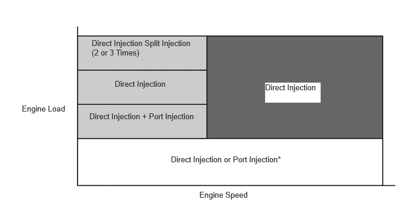
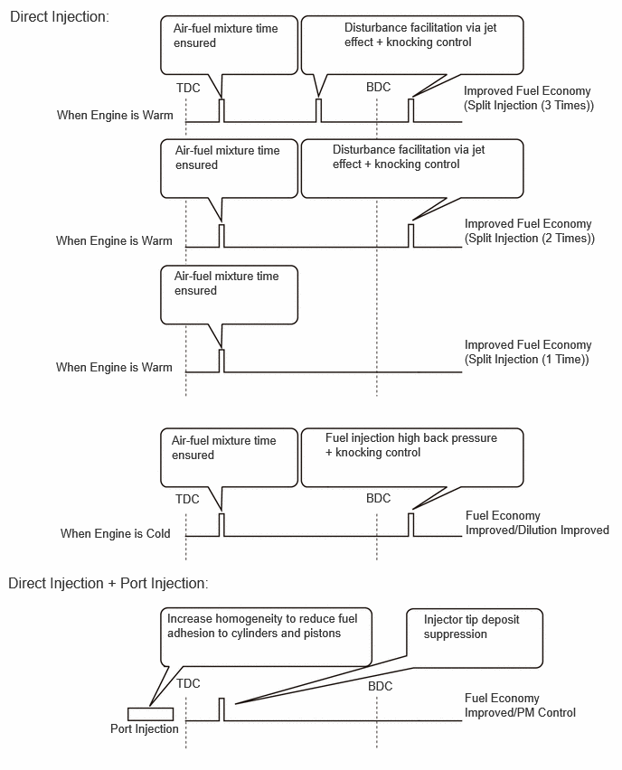
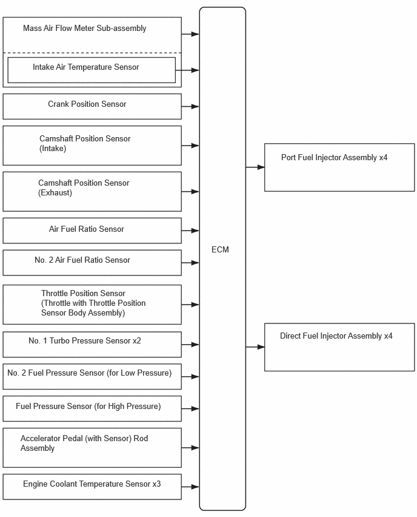

| Last Modified: 10-07-2025 | 6.11:8.1.0 | Doc ID: NM100000002GYAN |
| Model Year Start: 2024 | Model: Tacoma | Prod Date Range: [12/2023 - ] |
| Title: T24A-FTS (ENGINE CONTROL): SFI SYSTEM (for Gasoline Model): DIRECT INJECTION 4-STROKE GASOLINE ENGINE SUPERIOR VERSION SEQUENTIAL MULTIPORT FUEL INJECTION (D-4S SFI); 2024 - 2026 MY Tacoma [12/2023 - ] | ||
DIRECT INJECTION 4-STROKE GASOLINE ENGINE SUPERIOR VERSION SEQUENTIAL MULTIPORT FUEL INJECTION (D-4S SFI)
FUNCTION
(a) A Direct injection 4-stroke gasoline engine Superior version Sequential multiport Fuel Injection (D-4S SFI) system which has both direct injection type and port injection type is used for the fuel injection system.
(b) The intake air mass is detected by the mass air flow meter sub-assembly to control the fuel injection volume.
(c) Based on signals from each sensor, the ECM controls the injection volume and timing of port fuel injector assembly and direct fuel injector assembly in accordance with the engine speed and engine load in order to optimize combustion conditions. Due to this, engine oil dilution reduction, low fuel consumption, and improved emissions as well as high engine output are achieved.
(d) The fuel is finely divided into many fine particles by a porous type high pressure injector located in the center of each cylinder. By using pistons that are shaped to maintain tumble and high tumble ports to promote the mixing of air and fuel and realize high speed combustion, high power and low fuel consumption has been achieved.
(e) In order to fully maximize the effectiveness of direct injection (cooling effect, jet stream use, air-fuel mixture form variance), a multi-fuel injection system in which the injectors are pulsed multiple times during each injection is used. A D-4S injection control system that maximizes the merits of the port injection and direct injection is used.
Fuel Injector System Activation Ranges
*: Within this region, either port injection or direct injection will be selected depending on the driving conditions. (E.g. when performing learning of the air fuel ratio, direct injection is selected.)
Fuel Injection Timing
 (f) Fuel Cut
(1) When the engine speed exceeds the specified value, fuel injection is stopped to prevent over-revving.
Engine Speed for Fuel-cut at High Revs
|
Engine speed (rpm) |
6300 or more |